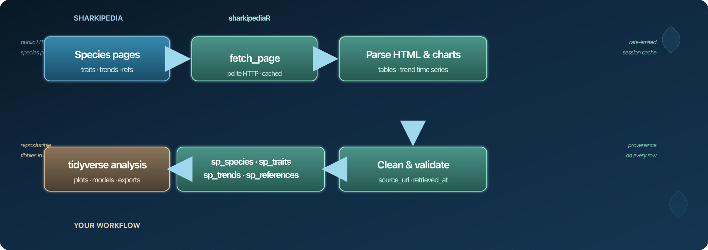

main branch: 
sharkipediaR
An R package to access Sharkipedia life-history traits and population trends
Overview • Installation • Key functionalities • Design • Help us • Issues • Contributions • Acknowledgements • Data accessibility • Licence
Overview
sharkipediaR is a tidyverse-oriented R client for Sharkipedia — the open database of shark, ray, and chimaera life-history traits and population abundance trends (Dulvy et al., 2022). The package downloads public species pages politely, parses embedded HTML tables and trend series, and returns reproducible tibbles ready for analysis and plotting.
It includes functions for:
- Discovering species and searching the species index
- Pulling taxonomy and provenance for a species (
sp_species()) - Extracting long-format trait tables (age at maturity, lengths, reproduction, …) (
sp_traits()) - Extracting population trend time series linked to literature references (
sp_trends()) - Listing references cited on species pages (
sp_references()) - Working offline with bundled example data for tutorials, tests, and CI
Every table includes source_url and retrieved_at so your workflows stay traceable to Sharkipedia and the original studies.
Documentation: https://ecologistpablo.github.io/SharkipediaR/
Installation
sharkipediaR requires R ≥ 4.1.
You will need devtools (or remotes) to install from GitHub:
install.packages("devtools")
devtools::install_github("ecologistpablo/SharkipediaR")The latest version can be installed with vignettes:
devtools::install_github("ecologistpablo/SharkipediaR", build_vignettes = TRUE)For tutorials and interactive plots, also install:
install.packages(c("tidyverse", "plotly", "viridis", "scico"))Key functionalities
A modular pipeline (fetch → parse → clean → validate) keeps the code maintainable when Sharkipedia pages change. Most users only need the sp_*() functions:
| Task | Function | Potential use |
|---|---|---|
| Species index |
sp_species_urls(), sp_search()
|
Build species lists for comparative or regional meta-analyses. |
| Taxonomy | sp_species() |
Attach higher taxonomic ranks when merging Sharkipedia data with other elasmobranch datasets. |
| Life-history traits | sp_traits() |
Parameterise age-structured or demographic models from published trait values. |
| Population trends | sp_trends() |
Plot or model abundance trajectories cited in stock assessments or conservation reviews. |
| Literature links | sp_references() |
Trace each measurement back to the primary study for methods sections and citations. |
| Offline examples |
example_carcharhinus(), example_reid2011_trends(), example_white_shark_trends()
|
Teach workshops or run CI without hitting the live website. |
Quick start (online):
suppressPackageStartupMessages(library(tidyverse))
library(sharkipediaR)
meta <- sp_species("Carcharhinus acronotus")
traits <- sp_traits("Carcharhinus acronotus")
trends <- sp_trends("Carcharhinus acronotus")Quick start (offline):
ex <- example_carcharhinus()
ex$traits %>% filter(trait_name == "Amat50")Every table includes source_url and retrieved_at for reproducible methods sections.
Design
sharkipediaR is a lightweight scientific client — not a bulk crawler. It reads the same public HTML pages you would open in a browser, with polite rate limits and in-session caching (memoise).

For argument lists, return columns, and worked examples per function, see the Package architecture vignette.
Documentation
| Resource | Description |
|---|---|
| Getting started | Install, overview, workflow |
| Ecological workflows | Fisheries / conservation examples, interactive plots |
| Architecture & functions | Pipeline, full function reference, internal parsers |
In R: utils::browseVignettes("sharkipediaR")
Vignettes appear under Articles in the pkgdown navbar. The site is built with pkgdown; see DEVELOPMENT.md for contributor notes.
Help us
sharkipediaR is new, and we want it to serve everyone who uses Sharkipedia in R.
If you work with shark and ray traits or trends, please consider helping:
- Try the package on species and references you know well — does the output match what you see on the website?
-
Suggest improvements — new
sp_*()helpers, clearer column names, or better defaults for common workflows (open a feature request) - Report bugs with a minimal reproducible example (species name, function called, what you expected vs. what you got)
- Share vignette ideas — fisheries assessments, Red List prep, comparative trait analyses, or teaching examples you would like documented
You do not need to be an R package developer to help. Testing on real species pages and describing what works (or does not) is valuable.
What to do if you encounter a problem
If you think you have found a bug or unexpected behaviour, post an issue here. Search existing issues first — someone may already have a workaround.
When you open a new issue, please:
- Describe the problem clearly
- Include a reproducible example (species name or URL, function, and R code)
- State what you expected vs. what happened
- Add screenshots or session info (
sessionInfo()) if relevant
How to Contribute
Contributions from the elasmobranch and R communities are welcome.
- Start a discussion with a feature request
- For well-scoped changes, open a pull request
Please keep pull requests focused and match existing code style. See DEVELOPMENT.md for package layout.
Acknowledgements
sharkipediaR is an independent R client; the data and mission belong to the Sharkipedia team and contributors. We gratefully acknowledge everyone behind Sharkipedia (About Sharkipedia).
Sharkipedia is an open-source research initiative to make published biological traits and population trends on sharks, rays, and chimaeras accessible to everyone — inspired by FishBase and modelled after the Coral Traits Database and the RAM Legacy Database. Its principles are: (1) web-based open access for all researchers, (2) expert quality control with traceability to original references, and (3) regular updates linked to IUCN Red List assessment workshops.
Sharkipedia leadership
| Name |
|---|
| Dr. Christopher Mull |
| Dr. Nathan Pacoureau |
| Dr. Sebastián Pardo |
| Dr. Holly Kindsvater |
| Dr. Nicholas Dulvy |
Data contributors (Sharkipedia)
Our databases would not be possible without countless contributors, including:
Aaron Judah · Sean Renning · Simon Dedman · Maryam Nakhostin · aharry · lsaldana · Chris Mull · Brit Finucci · ajudah · egarcia
…and many others who enter and curate data on sharkipedia.org.
When you publish work using this package, please cite Sharkipedia (Dulvy et al., 2022) and the original studies behind each trait or trend (reference column), and retain source_url / retrieved_at from sharkipediaR output.
Data accessibility
- Trait and trend data: Sharkipedia
- Species pages: Species index
- References and exports: References · Data export
- API: Sharkipedia API
sharkipediaR reads the same public HTML pages researchers view in a browser; it is not a bulk mirror of the database. For full exports, use Sharkipedia’s own tools where available.
Licence
MIT © Pablo Fuenzalida. See LICENSE.
Citation — Sharkipedia database:
Dulvy, N.K. et al. (2022). The conservation status and distribution of sharks, rays, and chimaeras. Scientific Data 9, 633. https://www.nature.com/articles/s41597-022-01655-1
Citation — this R package:
citation("sharkipediaR")